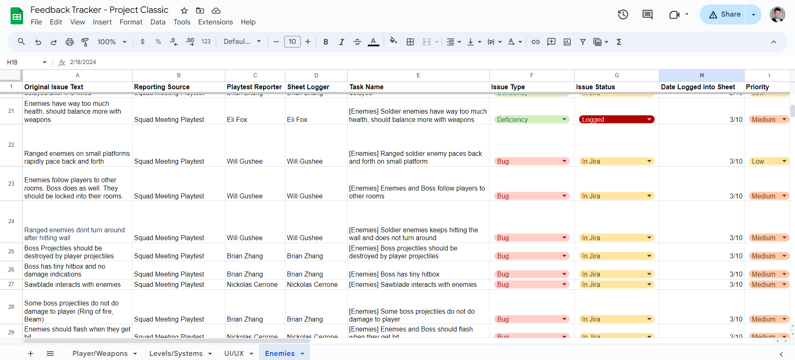
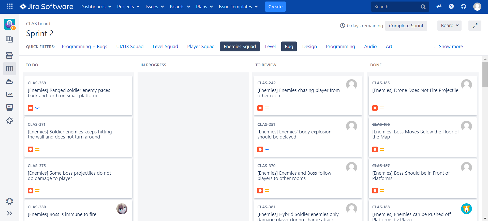
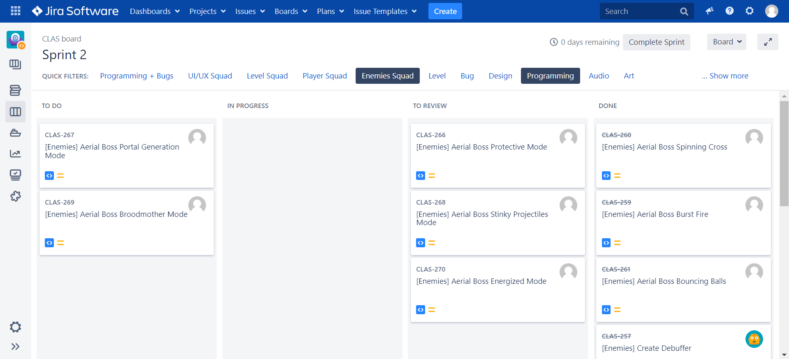
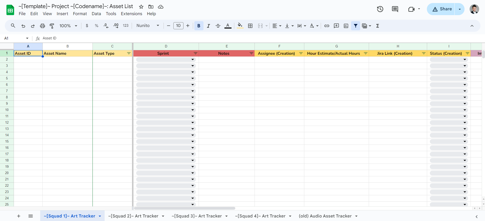
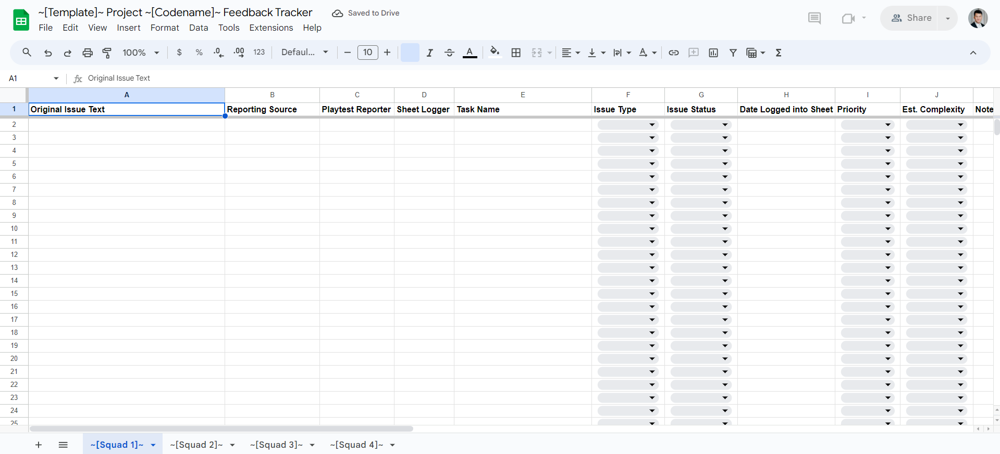
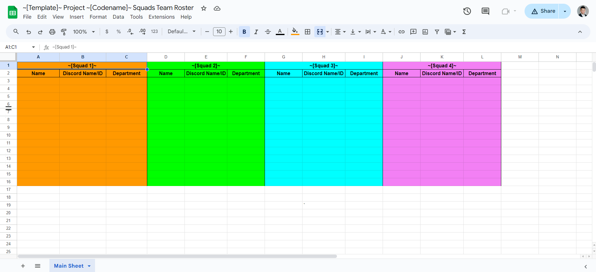
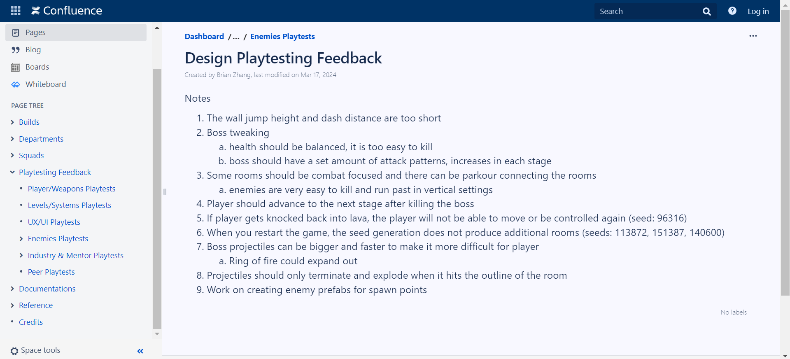
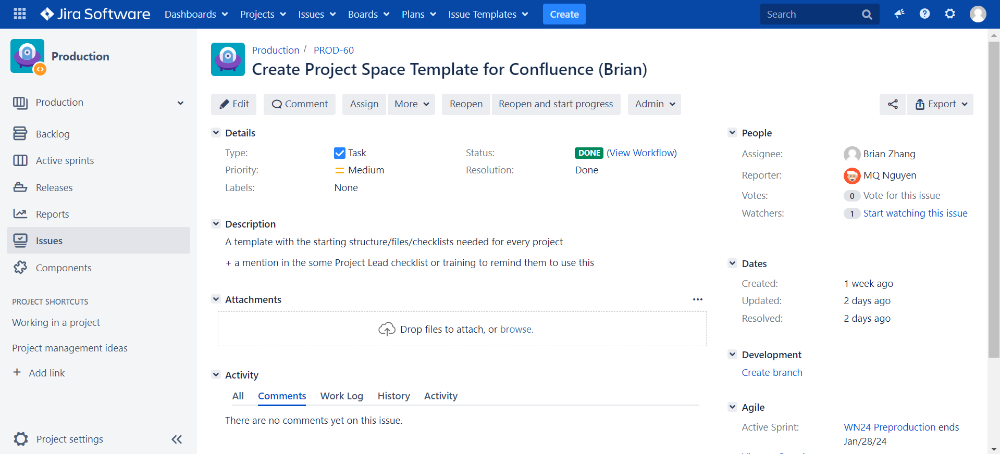
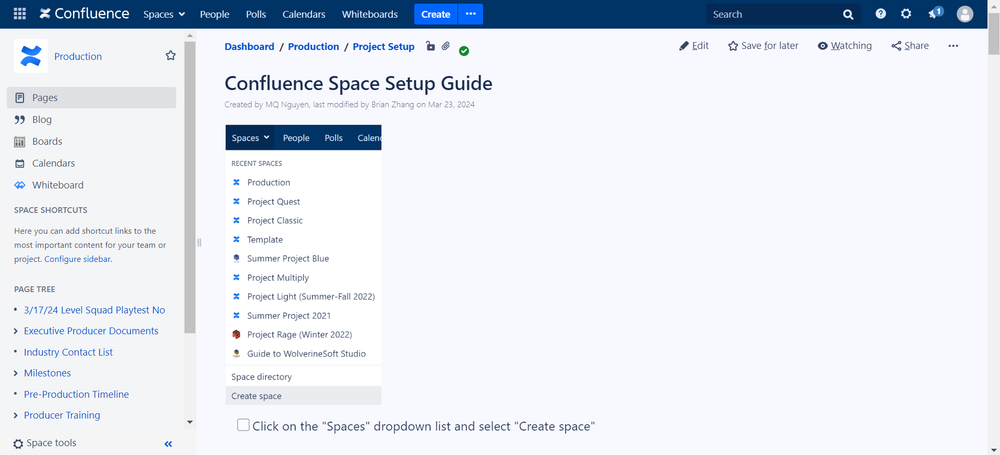

QA 2 + Sprint 3
Production Sync-up Meeting
The producers, including the lead producer, convened to outline the agenda for the upcoming leads meeting.
It became apparent that accelerating efforts with the art and audio departments is crucial, as Sprint 3 marks
the deadline for introducing new features. Furthermore, we must focus on incorporating two key functionalities
into the game's overall gameplay: the shopkeeper feature and the seamless transition to varying stages through
an infinite loop mechanism. Additionally, there is a noticeable lag in the delivery of art and audio assets,
primarily due to the departments not fulfilling their responsibilities. This may necessitate direct intervention
from the directors to address the issue.
Leads Meeting
At the lead meeting, updates from the directors informed us of plans to recruit former studio audio team members.
This strategy is set to enrich the game's audio, moving away from the current situation of repetitive and insufficient
soundtracks, especially noticeable in the absence of varied audio for players and enemies. Regarding art assets, there's
a consensus that all enemy sprites should be finalized and integrated into the game, along with the backgrounds.
Moreover, we emphasized the necessity for animations for each enemy type. Another critical component discussed was the
implementation of the infinite game loop, which is vital for escalating the game's difficulty across different stages.
Additionally, the development of the shopkeeper room was highlighted as a key feature needing attention, underlining
its importance to the game's dynamics.
Studio-wide Meeting
In the recent studio-wide meeting, we dedicated ourselves to playtesting sessions for the QA 2 and the beginning of Sprint 3.
These back-to-back playtesting weeks were strategically planned to refine and enhance the core gameplay, while also critically
assessing the game's scope and ensuring that design features were implemented as envisioned by the game designers. A key part of
this process was identifying which features are currently lacking, which unnecessary features could be removed to streamline the
game, and which additional features could be introduced to elevate the overall gaming experience for users.
Update Feedback Tracker
The feedback tracker highlights various issues and areas for improvement concerning the game's enemies, particularly focusing on their
mechanics and interaction with the player. Soldier enemies are flagged for having excessively high health, which disrupts the balance with
player weapons. Both ranged and melee soldier enemies exhibit problematic behavior, such as pacing back and forth on small platforms or when
the player is in another room, and failing to turn around after hitting walls. This indicates a need for better AI pathfinding and behavior
adjustment. Moreover, enemies, including bosses, currently follow the player into other rooms, and there's an inconsistency with enemy projectiles;
specifically, boss projectiles can't be destroyed by player shots, some don't deal damage, and the boss's hitbox is considered too small.
Interaction issues extend to the environment and game mechanics, such as sawblades affecting enemies, and a lack of visual feedback when enemies or
bosses are hit. Additionally, there are problems with enemy collision, boss attack patterns being too slow and predictable, and specific enemy types
only causing damage during certain actions. Technical issues like null reference warnings and disproportionately loud shooting noises compared to other
game sounds also detract from the gameplay experience. Addressing these points will significantly enhance game balance, engagement, and overall player satisfaction.

Playtesting Project Classic Prototype
In our playtesting of the classic prototype, we noted enhancements in the loading screen design and a streamlined process for class and projectile selection.
Each game session features unique levels thanks to random seed generation. However, we're addressing bugs affecting enemy and boss interactions, with some
enemies showing glitches and inconsistent behaviors around hazards and player proximity. An unimplemented feature is a shopkeeper for weapon upgrades, and there's
a need to diversify enemy types within levels. Although the boss shows varied attack patterns, more diversity is needed. Current projectiles are too easily dodged
and blocked by platforms, highlighting a need for adjustments to increase gameplay difficulty and dynamics.
Logging and Updating Tasks on Jira
After updating the feedback tracker with insights from the playtest during our squad meeting and additional playtesting of the prototype in my personal time,
I recorded several programming and bug-related tasks. Identifying and documenting these issues is crucial for the quality assurance and programming teams,
especially during QA weeks. This period is dedicated to refining and enhancing gameplay, ensuring a superior gaming experience through thorough balancing and
polishing efforts.


Production Work Session
During the production meeting, I had the chance to engage with MQ, the executive director, and Connor, a producer on Project Classic who is also the future director.
Our conversation centered around strategizing the automation of WolverineSoft studio for upcoming semesters, alongside reviewing the current progress of the Project Classic prototype.
We reached a preliminary agreement on introducing assignments through Canvas as a means to instigate higher accountability among studio members, aiming to reduce instances of inactivity
leading to expulsion. Additionally, we highlighted the importance of bolstering engagement through more frequent in-person workshops, playtesting sessions, and social events to foster stronger
connections among studio participants. In one of these workshop sessions, I focused on developing a blueprint in Confluence, allowing the creation of new Confluence spaces via a template.
Together with MQ, we also revamped the Google Sheets templates for tracking art and audio assets, feedback, and the Squad team roster, all of which are intended for inclusion in future project
Google Drive folders. The intention is to streamline these processes using a readme guide and Google's API powered by JavaScript, thereby automating the system for improved efficiency and organization.



Design Playtesting Feedback Documentation
Our recent gameplay evaluation pinpointed necessary improvements for a better player experience. Highlights include the need to enhance wall jump height and dash distance, rebalance boss health for tougher battles,
and introduce more varied boss attack patterns. We advocate for level designs that combine combat with parkour for engaging gameplay. Enemies, particularly in vertical spaces, are too simple to evade, reducing the game's difficulty.
Advancement to the next stage should be contingent on boss defeats, underscoring their significance. We've identified a critical bug causing loss of control when falling into lava (seed: 96316) and inconsistencies in room generation
(seeds: 113872, 151387, 140600). Proposals to amplify the challenge include upsizing and speeding up boss projectiles and adding a 'Ring of Fire' feature. Lastly, creating enemy prefabs for spawn points is advised to facilitate smoother
enemy incorporation and improve combat dynamics.

Confluence Setup Guide
I've developed a comprehensive guide to setting up a Confluence space, tailored for future producers and studio directors. This guide provides step-by-step instructions, complemented by screenshots, illustrating the appearance of the Confluence
space upon editing the project home page and the squads' parent pages in the source tree. It includes guidance on creating a useful link directory for studio members and how to adjust the squad headings across both parent and child pages.
Establishing a new Confluence space is crucial for enabling each department to compile documentation and notes efficiently, ensuring a streamlined process for information sharing and project management within the studio.


Hours Breakdown
QA 2
- Production Sync-up Meeting (30 minutes)
- Leads Meeting (1 hour)
- Studio-wide Meeting (2 hours 15 minutes)
- Studio Announcements – 11:00 AM ~ 11:20 AM (10 mins)
- Project Announcements – 11:20 AM ~ 11:30 AM (20 mins)
- Squad Meeting – 11:30 AM ~ 12:15 PM (45 mins)
- Department Meeting – 12:15 PM ~ 1:15 PM (60 mins)
- Update Feedback Tracker (1 hour)
- Playtesting Project Classic Prototype (1 hour 15 mins)
- Logging and Updating Tasks on Jira (1 hour)
- Production Workshop Session (2 hours)
Start of Sprint 3
- Production Sync-up Meeting (30 minutes)
- Leads Meeting (1 hour)
- Studio-wide Meeting (2 hours 15 minutes)
- Studio Announcements – 11:00 AM ~ 11:20 AM (10 mins)
- Project Announcements – 11:20 AM ~ 11:30 AM (20 mins)
- Squad Meeting – 11:30 AM ~ 12:15 PM (45 mins)
- Department Meeting – 12:15 PM ~ 1:15 PM (60 mins)
- Design Playtesting Feedback Documentation (30 minutes)
- Production Workshop Session (4 hours)
- Confluence Setup Guide (45 minutes)
Time Investment: 3 credits x 2 x 3 hours = 18 hours